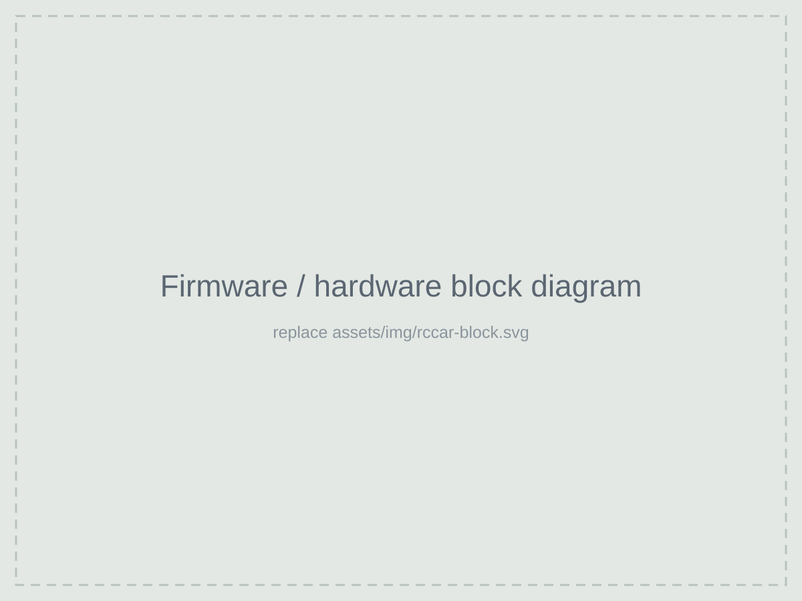
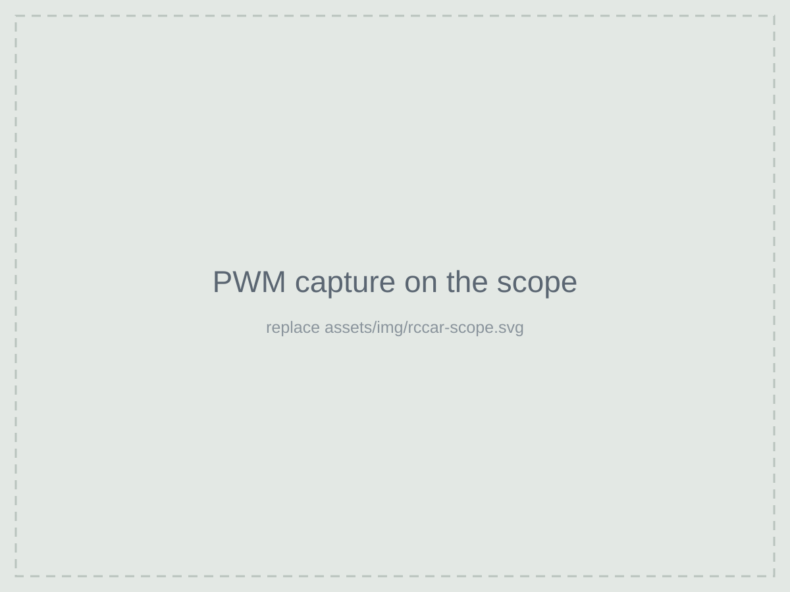

Overview
The goal was a car that feels responsive to drive, which meant the firmware had to react to the controller, update the motor and steering, and handle the peripherals without anything blocking anything else.
How it works
- Motor and steering. Hardware timers generate PWM for the motor driver and steering servo, so the outputs stay steady no matter what the CPU is doing.
- Inputs. Controller commands come in over serial, with interrupts keeping the car responsive to them.
- Integration. I brought up and debugged the wireless, motor-driver and steering hardware together, tracking down the issues that only showed up once everything was connected.

